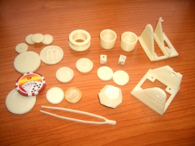

Estamos creando un repositorio con los objetos 3D imprimibles. Estamos poniendo tanto diseños nuestros, como otros creados por otros autores y publicados bajo licencia libre.
En la foto superior se pueden ver algunas de las piezas impresas durante las pruebas: la cabeza y cuerpo de los módulos REPY-1, los clásicos vasos de chupito, moneda de tamaño similar a 1€, dodecaedros, fichas de casino, unas pinzas, una moneda grande con la letra M en relieve, una polea y unos dados.
Las fotos las iremos subiendo a este álbum.
La gente de todas partes del mundo está creando nuevos objetos imprimibles. Los están subiendo a Thingiverse, uno de los mayores repositorios, donde no sólo tienen objetos para impresoras 3D, sino también para máquinas de corte por láser y en general cualquier tipo de diseños.
Con una impresora de estas, no sólo puedes diseñar y obtener tus piezas en muy poco tiempo, sino que también podrés imprimir las de los demás. O como me gusta llamarlo a mí: teletransportar los objetos y que se materialicen en tu propia casa 😉
se ve muy bien, ¿se consideraría piratería al imprimir objetos con derechos de autor? por ejemplo: Lego. Espero que la tendencia más fuerte sea Creative-Commons.
Independientemente de esa polémica, estaba pensando que la “teletransportación de objetos” como la planteas, tendría que incluir un desmaterializador en el origen para que se complete la logística. Sería aplicable solamente en algunos casos que requieran un ejemplar único sin copias.
Ten cuidado con el nuevo síndrome “quiero imprimirlo todo” 🙂
Hola!! somos un grupo de alumnos de la UPM, que estamos desarrollando un proyecto “videojuego” para el que tenemos que construir un prototipo. Nos gustaría saber cómo funciona esto del reprap y si podriamos llevarlo a cabo.
gracias!
Reprap es un proyecto libre. Toda la información está diponible en su página:
http://reprap.org/bin/view/Main/WebHome
La empresa makerbot comercializa una versión, CupCake, que es relativamente sencilla de construir:
http://www.makerbot.com/
Depende de cómo sea el objeto que queráis diseñar, será “imprimible” o no.
Saludos, Juan
Estoy hablando con un comercial de plasticos para comprar HDPE (nº reciclaje tipo 2, el del tapon de la leche) de 3mm redondo en españa ya que es mucho mas barato que el ABS o PLA y no encuentro nada a precios razonables por aqui.
Habeis encontrado algun sitio en españa? Estariais interesados en hacer el segundo pedido conjunto? (el primero ya lo he hecho me llegara el martes).
Hola Deviker!
No conozco ningún sitio en España 🙁 Sí estaríamos interesados en hacer el segundo pedido contigo 😉
Estaremos en contacto